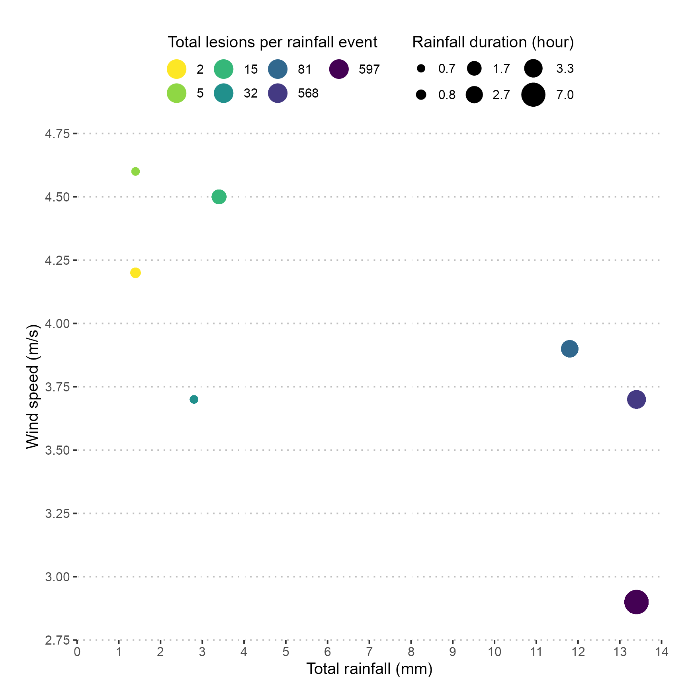
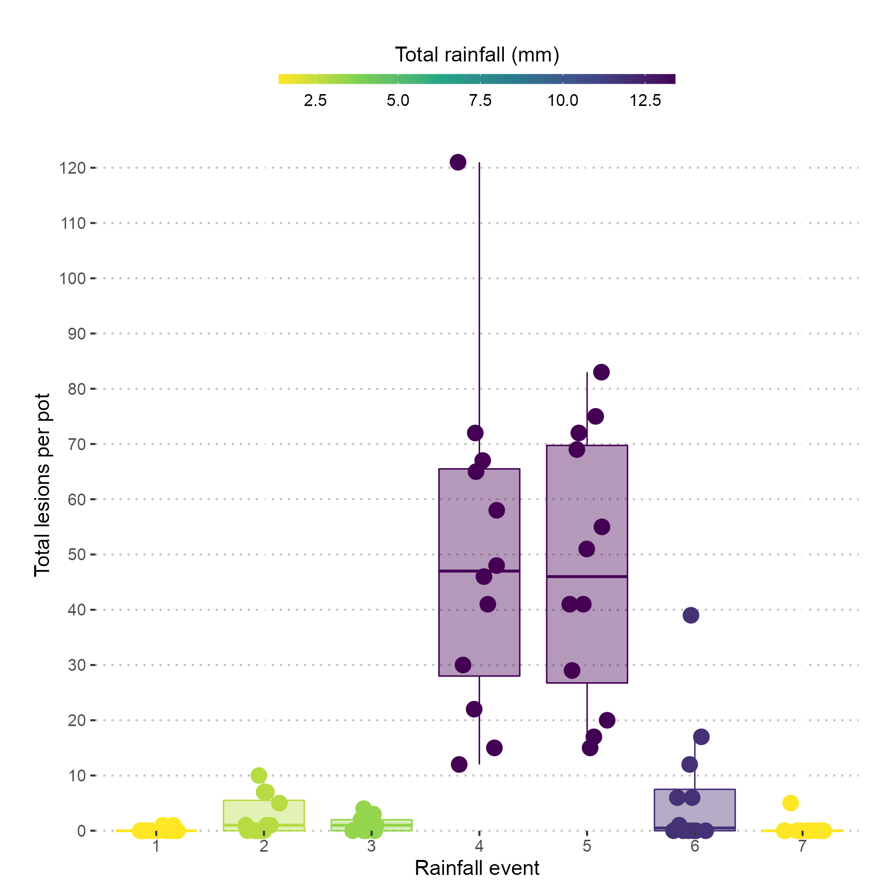

Data visualisation
2021-07-14
a02_Visualise_Data.Rmd
library("grDevices")
library("lubridate")
library("tidyverse")
library("clifro")
library("viridis")
library("showtext")
library("here")
library("ggpubr")
library("extrafont")
library("rainy")
library("tidyr")
library("readxl")
library("kableExtra")
theme_set(theme_pubclean(base_family = "Arial", base_size = 15))Import data
# event data includes dates and time out and removed, exposure hours and
# assessment date
event_data <- read_csv(system.file(
"extdata",
"exposure_events.csv",
package = "rainy",
mustWork = TRUE
)) %>%
mutate(
date_time_out = dmy_hm(date_time_out),
date_time_removed = dmy_hm(date_time_removed),
exposed = interval(date_time_out, date_time_removed)
)
lesion_data <- read_csv(system.file(
"extdata",
"lesion_data.csv",
package = "rainy",
mustWork = TRUE
)) %>%
pivot_longer(cols = plant_1:plant_3,
names_to = "plant",
values_to = "lesions") %>%
group_by(rainfall_event, pot) %>%
summarise(total_lesions = sum(lesions, na.rm = TRUE),
mean_lesions = round(mean(lesions), 1))Create object for analysis
Lastly we import the weather data and then:
- filter for only the dates/times with plants deployed,
- summarise by rainfall event,
- join with the lesion data, and then
- create a new column with the
total_lesionsoutliers filtered to use in the box plot, where outliers appear as a part of thegeom_boxplot()but not in thegeom_jitter().
dat <- read_csv(system.file(
"extdata",
"weather_data.csv",
package = "rainy",
mustWork = TRUE
)) %>%
mutate(
Date_time = round_date(dmy_hms(paste(Date, Time)), "minute"),
rain_duration = as.integer(`TOTAL Rain Gauge mm` > 0),
rainfall_event = case_when(
Date_time %within% event_data[1, "exposed"] ~ 1,
Date_time %within% event_data[2, "exposed"] ~ 2,
Date_time %within% event_data[3, "exposed"] ~ 3,
Date_time %within% event_data[4, "exposed"] ~ 4,
Date_time %within% event_data[5, "exposed"] ~ 5,
Date_time %within% event_data[6, "exposed"] ~ 6,
Date_time %within% event_data[7, "exposed"] ~ 7
)
) %>%
filter(
Date_time %within% event_data[1, "exposed"] |
Date_time %within% event_data[2, "exposed"] |
Date_time %within% event_data[3, "exposed"] |
Date_time %within% event_data[4, "exposed"] |
Date_time %within% event_data[5, "exposed"] |
Date_time %within% event_data[6, "exposed"] |
Date_time %within% event_data[7, "exposed"]
) %>%
group_by(rainfall_event) %>%
summarise(
wind_direction = round(circular.averaging(`AVERAGE Wind Direction Degs`), 1),
total_rain = sum(`TOTAL Rain Gauge mm`),
rain_duration = round(sum(rain_duration / 6), 1),
temp = round(mean(`AVERAGE Air Temperature DegC`), 1),
relative_humidity = round(mean(`AVERAGE Relative Humidity %`), 1),
wind_speed = round(mean(`AVERAGE Wind Speed km/h`) * 0.277778, 1) # convert to m/s
) %>%
left_join(lesion_data, by = "rainfall_event") %>%
mutate(
rainfall_event = as.factor(rainfall_event))##
## ── Column specification ────────────────────────────────────────────────────────
## cols(
## Date = col_character(),
## Time = col_time(format = ""),
## `MAXIMUM Wind Speed km/h` = col_double(),
## `AVERAGE Wind Speed km/h` = col_double(),
## `STDEV Wind Speed km/h` = col_double(),
## `AVERAGE Wind Direction Degs` = col_double(),
## `S THETA Wind Direction Degs` = col_double(),
## `MAXIMUM Peak Wind Gust km/h` = col_double(),
## `VWSP Vector Wind Spd km/h` = col_double(),
## `VWDIR Vector Wind Dir Degs` = col_double(),
## `AVERAGE Relative Humidity %` = col_double(),
## `AVERAGE Air Temperature DegC` = col_double(),
## `TOTAL Rain Gauge mm` = col_double(),
## `AVERAGE Solar Radiation Watts/m2` = col_double(),
## `AVERAGE Barometric Pressure hPa` = col_double(),
## `AVERAGE Soil Temperature 1 DegC` = col_double(),
## `AVERAGE Soil Temperature 2 DegC` = col_double(),
## `AVERAGE Soil Temperature 3 DegC` = col_double()
## )Check the data.
kable(dat,
format = "html",
table.attr = "class='table table-hover'")| rainfall_event | wind_direction | total_rain | rain_duration | temp | relative_humidity | wind_speed | pot | total_lesions | mean_lesions |
|---|---|---|---|---|---|---|---|---|---|
| 1 | 93.7 | 1.4 | 0.8 | 19.6 | 89.6 | 4.2 | 1 | 0 | 0.0 |
| 1 | 93.7 | 1.4 | 0.8 | 19.6 | 89.6 | 4.2 | 2 | 1 | 0.3 |
| 1 | 93.7 | 1.4 | 0.8 | 19.6 | 89.6 | 4.2 | 3 | 0 | 0.0 |
| 1 | 93.7 | 1.4 | 0.8 | 19.6 | 89.6 | 4.2 | 4 | 1 | 0.3 |
| 1 | 93.7 | 1.4 | 0.8 | 19.6 | 89.6 | 4.2 | 5 | 0 | 0.0 |
| 1 | 93.7 | 1.4 | 0.8 | 19.6 | 89.6 | 4.2 | 6 | 0 | 0.0 |
| 1 | 93.7 | 1.4 | 0.8 | 19.6 | 89.6 | 4.2 | 7 | 0 | 0.0 |
| 1 | 93.7 | 1.4 | 0.8 | 19.6 | 89.6 | 4.2 | 8 | 0 | 0.0 |
| 1 | 93.7 | 1.4 | 0.8 | 19.6 | 89.6 | 4.2 | 9 | 0 | 0.0 |
| 1 | 93.7 | 1.4 | 0.8 | 19.6 | 89.6 | 4.2 | 10 | 0 | 0.0 |
| 1 | 93.7 | 1.4 | 0.8 | 19.6 | 89.6 | 4.2 | 11 | 0 | 0.0 |
| 1 | 93.7 | 1.4 | 0.8 | 19.6 | 89.6 | 4.2 | 12 | 0 | 0.0 |
| 2 | 87.1 | 2.8 | 0.7 | 21.0 | 83.2 | 3.7 | 1 | 5 | 1.7 |
| 2 | 87.1 | 2.8 | 0.7 | 21.0 | 83.2 | 3.7 | 2 | 7 | 2.3 |
| 2 | 87.1 | 2.8 | 0.7 | 21.0 | 83.2 | 3.7 | 3 | 7 | 2.3 |
| 2 | 87.1 | 2.8 | 0.7 | 21.0 | 83.2 | 3.7 | 4 | 0 | 0.0 |
| 2 | 87.1 | 2.8 | 0.7 | 21.0 | 83.2 | 3.7 | 5 | 1 | 0.3 |
| 2 | 87.1 | 2.8 | 0.7 | 21.0 | 83.2 | 3.7 | 6 | 10 | 3.3 |
| 2 | 87.1 | 2.8 | 0.7 | 21.0 | 83.2 | 3.7 | 7 | 0 | 0.0 |
| 2 | 87.1 | 2.8 | 0.7 | 21.0 | 83.2 | 3.7 | 8 | 1 | 0.3 |
| 2 | 87.1 | 2.8 | 0.7 | 21.0 | 83.2 | 3.7 | 9 | 1 | 0.3 |
| 2 | 87.1 | 2.8 | 0.7 | 21.0 | 83.2 | 3.7 | 10 | 0 | 0.0 |
| 2 | 87.1 | 2.8 | 0.7 | 21.0 | 83.2 | 3.7 | 11 | 0 | 0.0 |
| 2 | 87.1 | 2.8 | 0.7 | 21.0 | 83.2 | 3.7 | 12 | 0 | 0.0 |
| 3 | 95.4 | 3.4 | 1.7 | 20.3 | 90.1 | 4.5 | 1 | 0 | 0.0 |
| 3 | 95.4 | 3.4 | 1.7 | 20.3 | 90.1 | 4.5 | 2 | 0 | 0.0 |
| 3 | 95.4 | 3.4 | 1.7 | 20.3 | 90.1 | 4.5 | 3 | 3 | 1.0 |
| 3 | 95.4 | 3.4 | 1.7 | 20.3 | 90.1 | 4.5 | 4 | 4 | 1.3 |
| 3 | 95.4 | 3.4 | 1.7 | 20.3 | 90.1 | 4.5 | 5 | 0 | 0.0 |
| 3 | 95.4 | 3.4 | 1.7 | 20.3 | 90.1 | 4.5 | 6 | 1 | 0.3 |
| 3 | 95.4 | 3.4 | 1.7 | 20.3 | 90.1 | 4.5 | 7 | 1 | 0.3 |
| 3 | 95.4 | 3.4 | 1.7 | 20.3 | 90.1 | 4.5 | 8 | 1 | 0.3 |
| 3 | 95.4 | 3.4 | 1.7 | 20.3 | 90.1 | 4.5 | 9 | 0 | 0.0 |
| 3 | 95.4 | 3.4 | 1.7 | 20.3 | 90.1 | 4.5 | 10 | 1 | 0.3 |
| 3 | 95.4 | 3.4 | 1.7 | 20.3 | 90.1 | 4.5 | 11 | 2 | 0.7 |
| 3 | 95.4 | 3.4 | 1.7 | 20.3 | 90.1 | 4.5 | 12 | 2 | 0.7 |
| 4 | 198.1 | 13.4 | 7.0 | 10.5 | 76.8 | 2.9 | 1 | 41 | NA |
| 4 | 198.1 | 13.4 | 7.0 | 10.5 | 76.8 | 2.9 | 2 | 58 | NA |
| 4 | 198.1 | 13.4 | 7.0 | 10.5 | 76.8 | 2.9 | 3 | 121 | 40.3 |
| 4 | 198.1 | 13.4 | 7.0 | 10.5 | 76.8 | 2.9 | 4 | 46 | 15.3 |
| 4 | 198.1 | 13.4 | 7.0 | 10.5 | 76.8 | 2.9 | 5 | 12 | NA |
| 4 | 198.1 | 13.4 | 7.0 | 10.5 | 76.8 | 2.9 | 6 | 15 | NA |
| 4 | 198.1 | 13.4 | 7.0 | 10.5 | 76.8 | 2.9 | 7 | 30 | 10.0 |
| 4 | 198.1 | 13.4 | 7.0 | 10.5 | 76.8 | 2.9 | 8 | 22 | 7.3 |
| 4 | 198.1 | 13.4 | 7.0 | 10.5 | 76.8 | 2.9 | 9 | 65 | NA |
| 4 | 198.1 | 13.4 | 7.0 | 10.5 | 76.8 | 2.9 | 10 | 48 | 16.0 |
| 4 | 198.1 | 13.4 | 7.0 | 10.5 | 76.8 | 2.9 | 11 | 67 | NA |
| 4 | 198.1 | 13.4 | 7.0 | 10.5 | 76.8 | 2.9 | 12 | 72 | NA |
| 5 | 236.3 | 13.4 | 3.3 | 10.6 | 82.9 | 3.7 | 1 | 55 | 18.3 |
| 5 | 236.3 | 13.4 | 3.3 | 10.6 | 82.9 | 3.7 | 2 | 41 | 13.7 |
| 5 | 236.3 | 13.4 | 3.3 | 10.6 | 82.9 | 3.7 | 3 | 83 | 27.7 |
| 5 | 236.3 | 13.4 | 3.3 | 10.6 | 82.9 | 3.7 | 4 | 17 | 5.7 |
| 5 | 236.3 | 13.4 | 3.3 | 10.6 | 82.9 | 3.7 | 5 | 29 | 9.7 |
| 5 | 236.3 | 13.4 | 3.3 | 10.6 | 82.9 | 3.7 | 6 | 41 | 13.7 |
| 5 | 236.3 | 13.4 | 3.3 | 10.6 | 82.9 | 3.7 | 7 | 75 | 25.0 |
| 5 | 236.3 | 13.4 | 3.3 | 10.6 | 82.9 | 3.7 | 8 | 15 | 5.0 |
| 5 | 236.3 | 13.4 | 3.3 | 10.6 | 82.9 | 3.7 | 9 | 20 | 6.7 |
| 5 | 236.3 | 13.4 | 3.3 | 10.6 | 82.9 | 3.7 | 10 | 51 | 17.0 |
| 5 | 236.3 | 13.4 | 3.3 | 10.6 | 82.9 | 3.7 | 11 | 72 | 24.0 |
| 5 | 236.3 | 13.4 | 3.3 | 10.6 | 82.9 | 3.7 | 12 | 69 | 23.0 |
| 6 | 249.3 | 11.8 | 2.7 | 10.3 | 83.0 | 3.9 | 1 | 6 | 2.0 |
| 6 | 249.3 | 11.8 | 2.7 | 10.3 | 83.0 | 3.9 | 2 | 12 | 4.0 |
| 6 | 249.3 | 11.8 | 2.7 | 10.3 | 83.0 | 3.9 | 3 | 0 | 0.0 |
| 6 | 249.3 | 11.8 | 2.7 | 10.3 | 83.0 | 3.9 | 4 | 0 | 0.0 |
| 6 | 249.3 | 11.8 | 2.7 | 10.3 | 83.0 | 3.9 | 5 | 0 | 0.0 |
| 6 | 249.3 | 11.8 | 2.7 | 10.3 | 83.0 | 3.9 | 6 | 6 | 2.0 |
| 6 | 249.3 | 11.8 | 2.7 | 10.3 | 83.0 | 3.9 | 7 | 39 | 13.0 |
| 6 | 249.3 | 11.8 | 2.7 | 10.3 | 83.0 | 3.9 | 8 | 1 | 0.3 |
| 6 | 249.3 | 11.8 | 2.7 | 10.3 | 83.0 | 3.9 | 9 | 17 | 5.7 |
| 6 | 249.3 | 11.8 | 2.7 | 10.3 | 83.0 | 3.9 | 10 | 0 | 0.0 |
| 6 | 249.3 | 11.8 | 2.7 | 10.3 | 83.0 | 3.9 | 11 | 0 | 0.0 |
| 6 | 249.3 | 11.8 | 2.7 | 10.3 | 83.0 | 3.9 | 12 | 0 | 0.0 |
| 7 | 83.1 | 1.4 | 0.7 | 21.2 | 70.3 | 4.6 | 1 | 0 | 0.0 |
| 7 | 83.1 | 1.4 | 0.7 | 21.2 | 70.3 | 4.6 | 2 | 0 | 0.0 |
| 7 | 83.1 | 1.4 | 0.7 | 21.2 | 70.3 | 4.6 | 3 | 0 | 0.0 |
| 7 | 83.1 | 1.4 | 0.7 | 21.2 | 70.3 | 4.6 | 4 | 0 | 0.0 |
| 7 | 83.1 | 1.4 | 0.7 | 21.2 | 70.3 | 4.6 | 5 | 0 | 0.0 |
| 7 | 83.1 | 1.4 | 0.7 | 21.2 | 70.3 | 4.6 | 6 | 0 | 0.0 |
| 7 | 83.1 | 1.4 | 0.7 | 21.2 | 70.3 | 4.6 | 7 | 5 | 1.7 |
| 7 | 83.1 | 1.4 | 0.7 | 21.2 | 70.3 | 4.6 | 8 | 0 | 0.0 |
| 7 | 83.1 | 1.4 | 0.7 | 21.2 | 70.3 | 4.6 | 9 | 0 | 0.0 |
| 7 | 83.1 | 1.4 | 0.7 | 21.2 | 70.3 | 4.6 | 10 | 0 | 0.0 |
| 7 | 83.1 | 1.4 | 0.7 | 21.2 | 70.3 | 4.6 | 11 | 0 | 0.0 |
| 7 | 83.1 | 1.4 | 0.7 | 21.2 | 70.3 | 4.6 | 12 | 0 | 0.0 |
Kernel density plot
ggplot(dat, aes(x = mean_lesions)) +
geom_density(fill = "steelblue", alpha = 0.7) +
geom_rug(alpha = 0.4) +
xlab("Total lesions per pot during each rainfall event")## Warning: Removed 7 rows containing non-finite values (stat_density).
Kernel density plots showing the shape of data distribution. A strong peak at fewer than 25 lesions per pot was observed.
Scatter plot
Taking the existing dat object, group by rainfall_event again and calculate the total number of lesions in 12 pots. Plot the total_rain on the x-axis, wind_speed on the y-axis, the total_lesions per rainfall_event as a factor using colour and rain_duration as the point size.
dat %>%
group_by(rainfall_event) %>%
mutate(total_lesions = sum(total_lesions, na.rm = TRUE)) %>%
ungroup() %>%
ggplot(aes(
x = total_rain,
y = wind_speed,
size = rain_duration,
colour = as.factor(total_lesions)
)) +
geom_point() +
scale_size_continuous(range = c(3, 10),
breaks = sort(unique(dat$rain_duration),
decreasing = FALSE)) +
scale_colour_viridis_d(direction = -1) +
guides(
size = guide_legend(
title = "Rainfall duration (hour)",
title.position = "top",
title.hjust = 0.5
),
colour = guide_legend(
title = "Total lesions per rainfall event",
override.aes = list(size = 8),
title.position = "top",
title.hjust = 0.5
)
) +
scale_x_continuous(breaks = seq(from = 0, to = 14, by = 1),
limits = c(0, 14)) +
scale_y_continuous(breaks = seq(from = 2, to = 5, by = 0.25),
limits = c(2.75, 4.75)) +
labs(y = "Wind speed (m/s)",
x = "Total rainfall (mm)") +
theme(legend.key = element_blank(),
plot.margin = margin(25, 25, 10, 25)) +
coord_cartesian(clip = "off",
expand = FALSE)
Boxplot
Box plot of the total lesions for each rainfall event with total rainfall as the colour.
ggplot(
dat,
aes(
x = rainfall_event,
y = total_lesions,
group = rainfall_event,
colour = total_rain,
fill = total_rain
)
) +
geom_boxplot(alpha = 0.4,
outlier.size = 0) +
geom_point(size = 5,
position = position_jitterdodge()) +
scale_colour_viridis_c(direction = -1,
name = "Total rainfall (mm)") +
scale_fill_viridis_c(direction = -1,
name = "Total rainfall (mm)") +
scale_y_continuous(breaks = seq(from = 0, to = 130, by = 10),
limits = c(0, 125)) +
labs(x = "Rainfall event",
y = "Total lesions per pot") +
guides(color = guide_colorbar(
title.position = "top",
title.hjust = 0.5,
barwidth = unit(20, "lines"),
barheight = unit(0.5, "lines")
)) +
theme(legend.key = element_blank(),
plot.margin = margin(25, 25, 10, 25)) +
coord_cartesian(clip = "off",
expand = FALSE)
Wind rose
Import wind speed and wind direction data.
wind_dat <-
read_excel(system.file("extdata", "wind_data.xlsx", package = "rainy")) %>%
mutate(wind_speed = wind_speed / 3.6) %>%
mutate(wind_direction = as.numeric(wind_direction)) %>%
mutate(wind_speed = as.numeric(wind_speed)) %>%
mutate(rainfall_event = as.factor(rainfall_event))Plot wind rose
fig_3 <-
with(
wind_dat,
windrose(
wind_speed,
wind_direction,
rainfall_event,
n_col = 3,
legend_title = "Wind speed (m/s)"
)
)
fig_3 <-
fig_3 +
scale_fill_viridis_d(name = "Wind Speed (m/s)", direction = -1) +
xlab("") +
theme_pubclean(base_family = "Arial", base_size = 15)
fig_3
Colophon
## R version 4.1.0 (2021-05-18)
## Platform: x86_64-apple-darwin17.0 (64-bit)
## Running under: macOS Catalina 10.15.6
##
## Matrix products: default
## BLAS: /Library/Frameworks/R.framework/Versions/4.1/Resources/lib/libRblas.dylib
## LAPACK: /Library/Frameworks/R.framework/Versions/4.1/Resources/lib/libRlapack.dylib
##
## locale:
## [1] en_AU.UTF-8/en_AU.UTF-8/en_AU.UTF-8/C/en_AU.UTF-8/en_AU.UTF-8
##
## attached base packages:
## [1] stats graphics grDevices utils datasets methods base
##
## other attached packages:
## [1] kableExtra_1.3.4 readxl_1.3.1 rainy_0.0.0.9000 extrafont_0.17
## [5] ggpubr_0.4.0 here_1.0.1 showtext_0.9-2 showtextdb_3.0
## [9] sysfonts_0.8.3 viridis_0.6.1 viridisLite_0.4.0 clifro_3.2-5
## [13] forcats_0.5.1 stringr_1.4.0 dplyr_1.0.7 purrr_0.3.4
## [17] readr_1.4.0 tidyr_1.1.3 tibble_3.1.2 ggplot2_3.3.5
## [21] tidyverse_1.3.1 lubridate_1.7.10
##
## loaded via a namespace (and not attached):
## [1] fs_1.5.0 webshot_0.5.2 RColorBrewer_1.1-2 httr_1.4.2
## [5] rprojroot_2.0.2 tools_4.1.0 backports_1.2.1 bslib_0.2.5.1
## [9] utf8_1.2.1 R6_2.5.0 DBI_1.1.1 colorspace_2.0-2
## [13] withr_2.4.2 tidyselect_1.1.1 gridExtra_2.3 extrafontdb_1.0
## [17] curl_4.3.2 compiler_4.1.0 textshaping_0.3.5 cli_3.0.0
## [21] rvest_1.0.0 xml2_1.3.2 desc_1.3.0 labeling_0.4.2
## [25] sass_0.4.0 scales_1.1.1 pkgdown_1.6.1 systemfonts_1.0.2
## [29] digest_0.6.27 foreign_0.8-81 svglite_2.0.0 rmarkdown_2.9
## [33] rio_0.5.27 pkgconfig_2.0.3 htmltools_0.5.1.1 highr_0.9
## [37] dbplyr_2.1.1 fastmap_1.1.0 rlang_0.4.11 rstudioapi_0.13
## [41] farver_2.1.0 jquerylib_0.1.4 generics_0.1.0 jsonlite_1.7.2
## [45] zip_2.2.0 car_3.0-11 magrittr_2.0.1 Rcpp_1.0.6
## [49] munsell_0.5.0 fansi_0.5.0 abind_1.4-5 lifecycle_1.0.0
## [53] stringi_1.6.2 yaml_2.2.1 carData_3.0-4 plyr_1.8.6
## [57] grid_4.1.0 crayon_1.4.1 haven_2.4.1 hms_1.1.0
## [61] knitr_1.33 pillar_1.6.1 ggsignif_0.6.2 reshape2_1.4.4
## [65] reprex_2.0.0 glue_1.4.2 evaluate_0.14 data.table_1.14.0
## [69] modelr_0.1.8 vctrs_0.3.8 Rttf2pt1_1.3.8 cellranger_1.1.0
## [73] gtable_0.3.0 assertthat_0.2.1 cachem_1.0.5 openxlsx_4.2.4
## [77] xfun_0.24 broom_0.7.8 rstatix_0.7.0 ragg_1.1.3
## [81] memoise_2.0.0 ellipsis_0.3.2